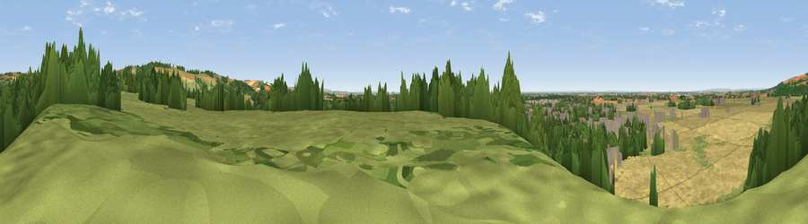

Viewpoint near Pocklington
#21344 in England · top 48% of its area beats it · near Pocklington · footpathWhere it is
The exact computed spot (SE 81225 49675). Click the marker for map links.
Public access: a public right of way passes within 23 m of this spot. Computed from Natural England's CRoW access layer and OpenStreetMap rights of way — not the legal definitive map. Always verify locally.
The view, rendered

A 360° render of this exact spot computed from the terrain model, tree cover and land cover — summer colours, afternoon light, calibrated against photographs of famous viewpoints. Real trees, hedges and buildings will differ in detail.
The panorama
Grey silhouette: terrain skyline in each direction (720 bearings, Earth curvature and refraction included). Dashed green: skyline with trees (+15 m) and buildings (+8 m) as obstacles. Blue strip: how far the ground is visible on each bearing.
Where the view opens
Wedge length = distance to the farthest visible ground on that bearing (vegetation-aware). Rings at 10, 25 and 50 km.
What fills the view
41% cropland · 30% grassland · 19% woodland · 9% built-up
Angular shares of the visible panorama (visual magnitude), not map area. Landscape diversity 0.56 (0–1 Shannon).
Key numbers
More beautiful places nearby
The staircase of upgrades: each row has a higher view potential than everything closer. Driving times are estimates from straight-line distance, calibrated against real road routing — check an actual route before setting out.
| Place | Direction | Drive | Score |
|---|---|---|---|
| Viewpoint near Millington | ENE · 2 km | ~6 min | 66.8 |
| Viewpoint near Millington | N · 4 km | ~9 min | 69.7 |
| Viewpoint near Bishop Wilton | N · 5 km | ~12 min | 71.5 |
| Garrowby Hill (A166 crest) | N · 7 km | ~14 min | 71.9 |
| Viewpoint near Acklam | N · 11 km | ~21 min | 73.8 |
| Viewpoint near Ampleforth | NW · 36 km | ~55 min | 76.6 |
| Beacon Hill | NE · 41 km | ~61 min | 79.1 |
| Viewpoint near Speeton | NE · 42 km | ~61 min | 80.0 |
53.93683, -0.76423 · source: screening · position refined by local search. Computed location — check access rights before visiting.